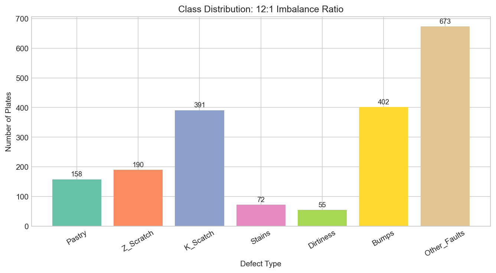
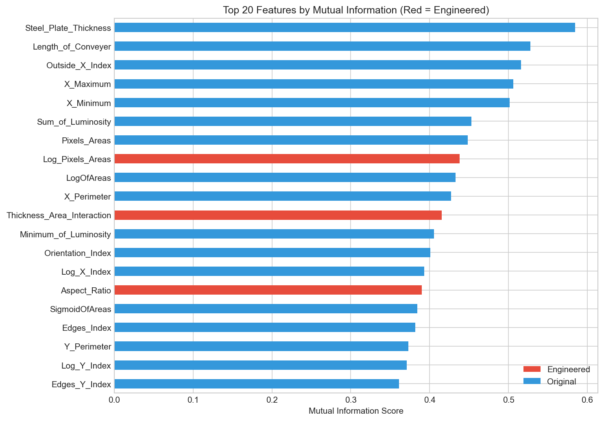
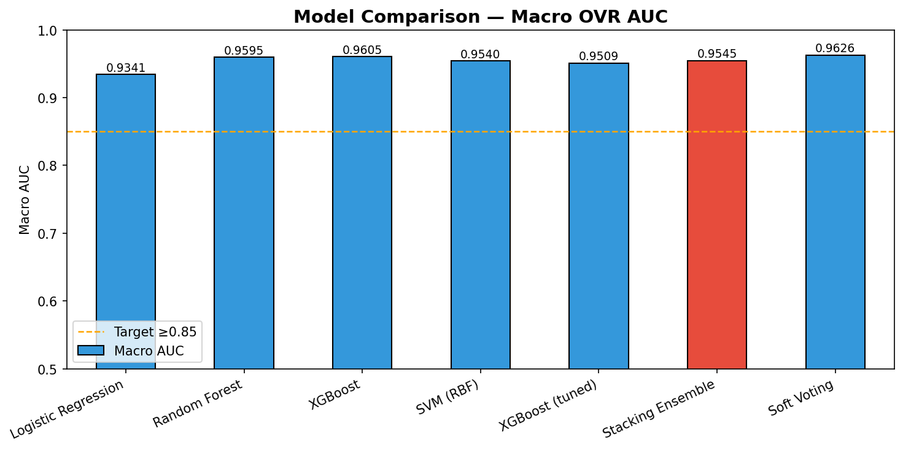
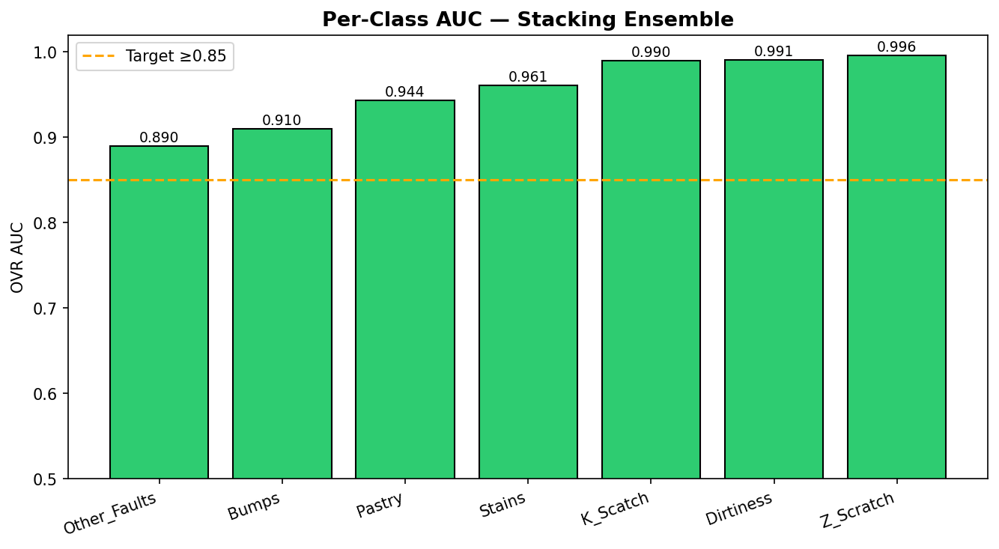
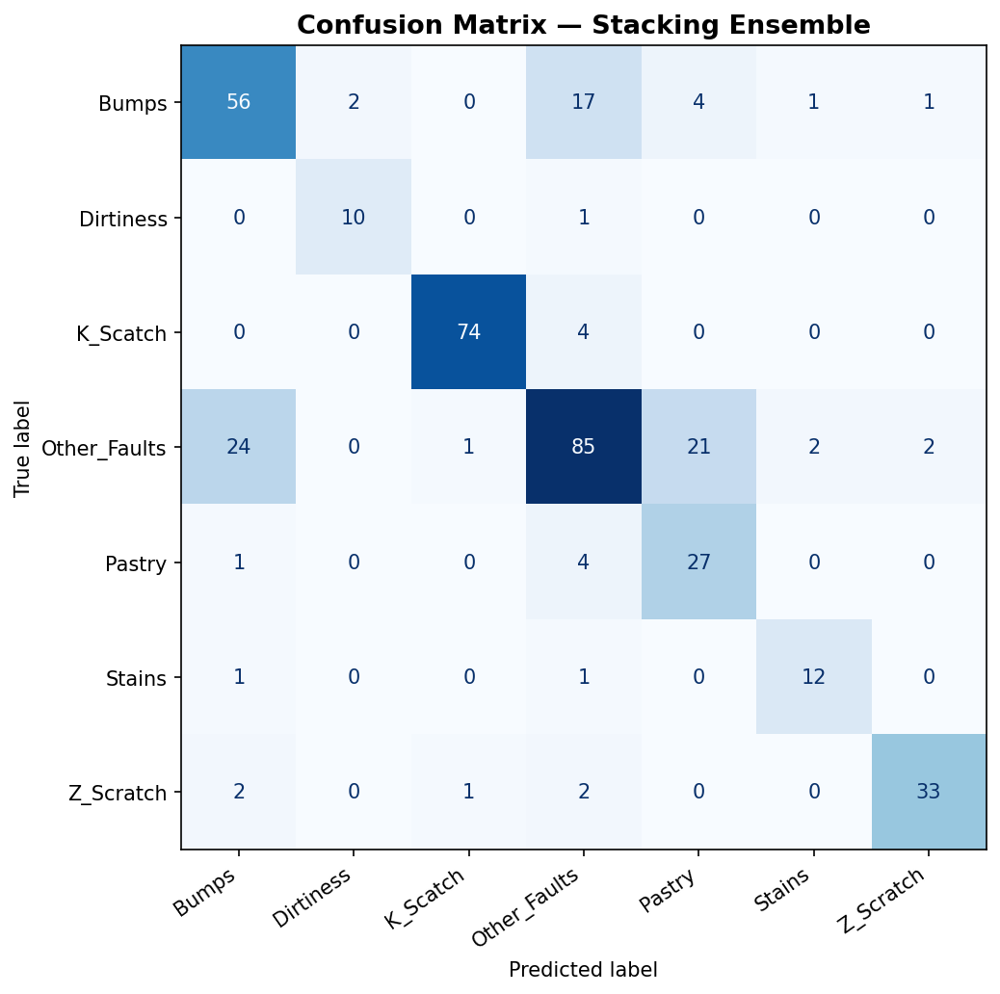
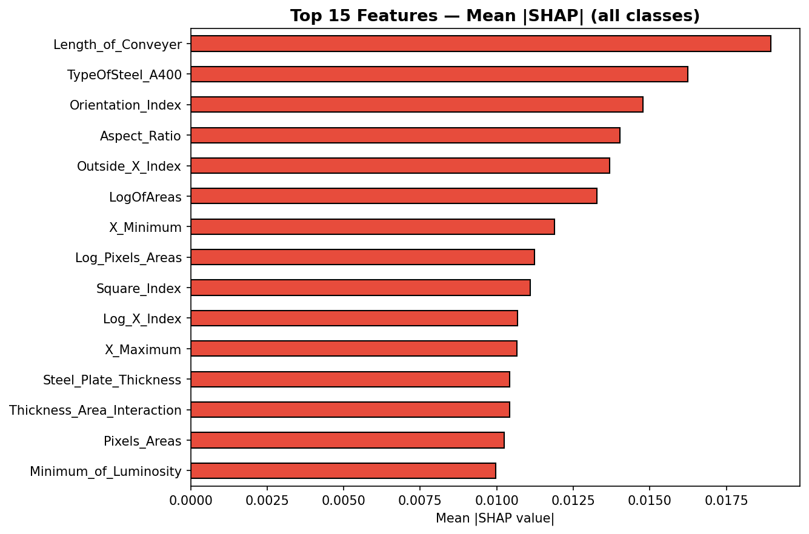
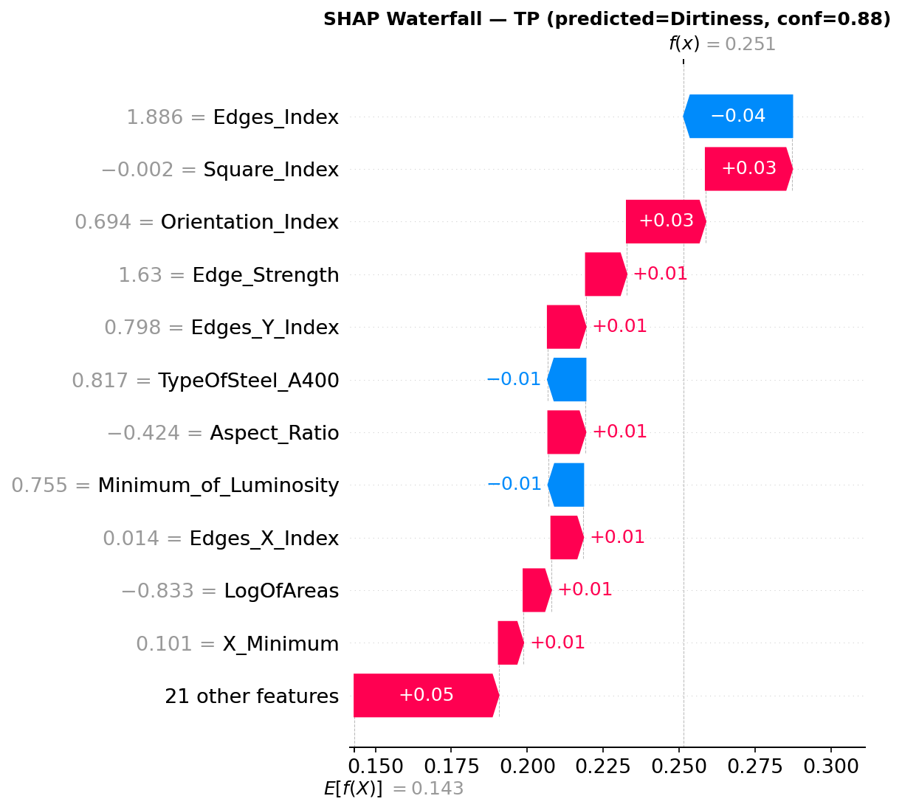
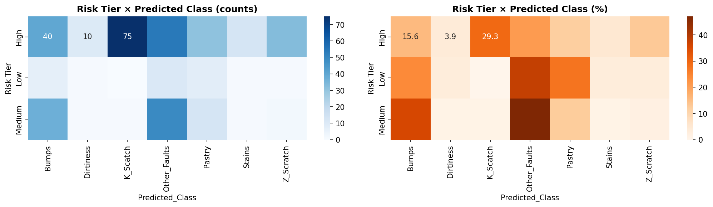

Steel Plates Defect
IDSS
An Intelligent Decision Support System for Automated Defect Classification & Quality Control
Problem Statement
⚠ The Challenge
Steel manufacturing plants produce thousands of plates per shift. Defective plates reaching customers result in costly recalls, safety risks, and reputational damage.
📊 Manual Inspection Limits
Manual visual inspection is slow, subjective, and error-prone. Operators struggle with 7 distinct defect types sharing overlapping visual features.
🎯 Research Goal
Build an Intelligent Decision Support System that automatically classifies steel plate defects, quantifies uncertainty, explains decisions, and supports operators with actionable guidance.
🗄 Dataset
UCI Steel Plates Faults (ID 198) — 1,941 plates, 27 sensor features, 7 mutually exclusive defect classes. Severe class imbalance: 12:1 ratio (Other_Faults=673 vs Dirtiness=55).
5-Phase IDSS Pipeline
Each phase builds on the previous — from raw data to a fully deployed decision-support prototype.
Understanding the Dataset
Key Findings
📌 1,941 steel plate samples with 27 numeric sensor readings from conveyor imaging
⚠️ Severe class imbalance (12:1) — Other_Faults (673) dominates; Dirtiness (55) is smallest
🔗 Multi-collinear features — X_Minimum/X_Maximum, perimeter pairs show high correlation
📐 All features numeric, no missing values — two binary steel-type flags (A300/A400)
🎯 Mutually exclusive labels — every plate has exactly one defect class (row sums to 1)
⚠ Class Imbalance Impact
Standard accuracy is misleading — a model that always predicts Other_Faults gets 34.7% accuracy for "free". This drove the choice of Macro OVR AUC as the primary metric, which treats all classes equally.

Figure: Class distribution showing 12:1 imbalance ratio
Feature Engineering & Pipeline
6 Engineered Features
Preprocessing Pipeline
Saved as preprocessing_pipeline.pkl — fits on training data only, applied to test set to prevent data leakage.

Figure: Top 20 features by mutual information score — red bars are engineered features
Model Selection & Training

Figure: Macro OVR AUC comparison — highlighted bar = final chosen model
| Model | Macro AUC | Accuracy |
|---|---|---|
| Logistic Regression | 0.934 | 65.6% |
| Random Forest | 0.960 | 78.2% |
| XGBoost | 0.961 | 76.4% |
| SVM (RBF) | 0.954 | 71.5% |
| XGBoost (tuned) | 0.951 | 73.5% |
| Stacking Ensemble ★ | 0.9545 | 76.4% |
| Soft Voting | 0.963 | 78.2% |
Why Stacking Ensemble?
Although Soft Voting has marginally higher AUC (0.9626), the Stacking Ensemble was chosen for its structured meta-learner — enabling SHAP explainability via the RF base estimator while maintaining competitive performance and better Macro F1 (0.794).
Architecture
Base 1: RandomForest (300 trees, balanced)
Base 2: SVM (RBF kernel, balanced)
Meta: Logistic Regression (balanced)
Model Performance

All 7 classes exceed the 0.85 target AUC

Confusion Matrix — main confusion: Bumps ↔ Other_Faults
⚠ Weakest Class: Other_Faults (AUC 0.890)
Most confused with Bumps and Pastry due to the ambiguous "catch-all" nature of this class. This is the focus of future sub-type analysis.
SHAP Analysis — Why Does the Model Decide?
SHAP TreeExplainer
Applied on the Random Forest base estimator of the stacking model. SHAP (SHapley Additive exPlanations) fairly attributes the prediction to each feature, satisfying local and global explainability requirements.

Top 15 features by mean |SHAP| across all classes
Top 5 Global Drivers

SHAP waterfall — True Positive: Dirtiness predicted at 88% confidence
Risk Tiers & Operational Decision Rules
Business Impact
At the High tier, the model achieves 88.3% accuracy on 65.8% of production volume — enabling automation of the majority of QC decisions while focusing human attention only where it matters.

Figure: Risk Tier × Predicted Class — counts (left) and % (right)
Key Observation
K_Scatch has the highest proportion of High-tier predictions (75 plates, 29.3%) — the model is very certain about this defect class. Bumps & Other_Faults have the most Medium-tier uncertainty, requiring more human oversight.
Streamlit Web Application
🔍 Tab 1 — Prediction
📝 Manual Entry — 27 sensor fields with training-set median defaults, 🎲 Randomize button for demo
📂 CSV Batch Upload — classify hundreds of plates at once
🎯 Shows predicted class, confidence %, risk badge (High/Medium/Low)
📊 Class probability bar chart for all 7 defect types
🌊 SHAP waterfall plot — per-prediction feature attribution
✅ Recommended factory action (Reject / Hold / Conditional Accept)
🤖 Tab 3 — QC AI Assistant
💬 Powered by Groq API (LLaMA 3.3 70B)
📌 Receives full prediction context — defect class, SHAP values, risk tier, all probabilities
📊 In batch mode: receives complete dashboard summary with all chart data
🗣️ Answers natural language questions about predictions and QC procedures
💡 Context-aware suggested question buttons per defect type
Technology Stack
Run Command
python -m streamlit run prototype/app.py
Batch Analytics — PowerBI-style Visualisations

.png)
.png)
.png)
.png)
Dashboard includes: KPI cards · Defect donut · Risk tier bars · Confidence box plots · Probability heatmap · SHAP beeswarm · Defect×Risk stacked bars · Actionable summary table — all charts are interactive (Plotly) and the AI chatbot can explain every panel.
5 Business Recommendations
Project Achievements
exceeds 0.85 target
AUC 0.85 threshold
automatable at 88.3%
AI chatbot deployed
✅ Deliverables Completed
📊 Phase 1: EDA & imbalance analysis
⚙️ Phase 2: Feature engineering pipeline (32 features)
🤖 Phase 3: Stacking ensemble — Macro AUC 0.9545
💡 Phase 4: SHAP explainability + 3-tier risk framework
🖥️ Phase 5: Streamlit IDSS + Analytics Dashboard + AI chatbot
🚀 Future Work
🔬 Sub-type analysis for Other_Faults by thickness quartile
📡 Data drift monitoring dashboard
🔄 Active learning pipeline with Medium-tier operator feedback
📱 Mobile-friendly operator interface for shop-floor use
🌐 REST API wrapper for ERP system integration